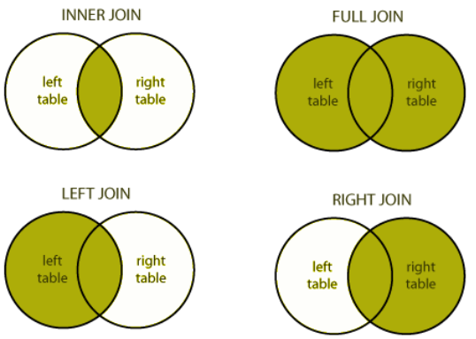

SQL基础语句快查
原教程地址：http://www.xuesql.cn/
定义
1.1 什么是SQL(Structured Query Language)
SQL, 全称为Structured Query Language（结构化查询语言)。 要讲SQL就绕不开database(数据库), 平时所说的数据库，一般就是指的 Relational database(关系型数据库)。
大家知道数据库是用来存储大量数据的一种软件，那么SQL呢是用来操作数据里的数据，具体来说SQL可以做数据查询，数据更新，写入数据等等。
1.2 关系型数据库(Relational databases)
在学习SQL语法之前有必要解释一下什么是关系型数据库（Relational databases)？数据库由若干张表(Table)组成，这里说的数据Table很像Excel里的表; 正如Excel里的表格，Table也是由 行(rows)和列(columns)组成。
一个Table存储一个类别的数据，每一行是一条数据，每一列是这种数据的一个属性； Table就像一个二维的表格，列(columns)是有限固定的，行(rows)是无限不固定的。
查询(SELECT)
Select 查询某些属性列（specific columns）的语法。
SELECT column（列名）, another_column, …
FROM mytable（表名）;Select 查询所有列。
SELECT *
FROM mytable（表名）;条件查询 (WHERE)
条件查询语法。WHERE
SELECT column, another_column, …
FROM mytable
WHERE condition
AND/OR another_condition
AND/OR …;| Operator（关键字） | Condition（意思） | SQL Example(例子） |
|---|---|---|
| =, !=, < <=, >, >= | Standard numerical operators 基础的 大于，等于等比较 | col_name != 4 |
| BETWEEN … AND … | Number is within range of two values (inclusive) 在两个数之间 | col_name BETWEEN 1.5 AND 10.5 |
| NOT BETWEEN … AND … | Number is not within range of two values (inclusive) 不在两个数之间 | col_name NOT BETWEEN 1 AND 10 |
| IN (…) | Number exists in a list 在一个列表 | col_name IN (2, 4, 6) |
| NOT IN (…) | Number does not exist in a list 不在一个列表 | col_name NOT IN (1, 3, 5) |
模糊查询(LIKE) 和 通配符(%）
| Operator（操作符） | Condition（解释） | Example（例子） |
|---|---|---|
| = | Case sensitive exact string comparison (notice the single equals)完全等于 | col_name = “abc” |
| != or <> | Case sensitive exact string inequality comparison 不等于 | col_name != “abcd” |
| LIKE | Case insensitive exact string comparison 没有用通配符等价于 = | col_name LIKE “ABC” |
| NOT LIKE | Case insensitive exact string inequality comparison 没有用通配符等价于 != | col_name NOT LIKE “ABCD” |
| % | Used anywhere in a string to match a sequence of zero or more characters (only with LIKE or NOT LIKE) 通配符，代表匹配0个以上的字符 | col_name LIKE “%AT%” (matches “AT”, “ATTIC”, “CAT” or even “BATS”) “%AT%” 代表AT 前后可以有任意字符 |
| _ | Used anywhere in a string to match a single character (only with LIKE or NOT LIKE) 和% 相似，代表1个字符 | colname LIKE “AN“ (matches “AND”, but not “AN”) |
| IN (…) | String exists in a list 在列表 | col_name IN (“A”, “B”, “C”) |
| NOT IN (…) | String does not exist in a list 不在列表 | col_name NOT IN (“D”, “E”, “F”) |
过滤(DISTINCT)
选取出唯一的结果的语法
SELECT DISTINCT column, another_column, …
FROM mytable
WHERE condition(s);排序(ORDER)
结果排序（ordered results）
SELECT column, another_column, …
FROM mytable
WHERE condition(s)
ORDER BY column ASC/DESC;ASC：升序；DESC：降序。
选取(LIMIT, OFFSET)
LIMIT 和 OFFSET 子句通常和ORDER BY 语句一起使用，当我们对整个结果集排序之后，我们可以 LIMIT来指定只返回多少行结果 ,用 OFFSET来指定从哪一行开始返回。
SELECT column, another_column, …
FROM table1
WHERE condition(s)
ORDER BY column ASC/DESC, another_column ASC/DESC, …
LIMIT num_limit OFFSET num_offset;多表联合(JOIN)
主键(primary key), 一般关系数据表中，都会有一个属性列设置为 主键(primary key)。主键是唯一标识一条数据的，不会重复复（想象你的身份证号码)。一个最常见的主键就是auto-incrementing integer(自增ID，每写入一行数据ID+1, 当然字符串，hash值等只要是每条数据是唯一的也可以设为主键。借助主键(primary key)（当然其他唯一性的属性也可以），我们可以把两个表中具有相同 主键ID的数据连接起来。

INNER JOIN
用INNER JOIN 连接表的语法。通过ON条件描述的关联关系;INNER JOIN 先将两个表数据连接到一起. 两个表中如果通过ID互相找不到的数据将会舍弃。
SELECT table1.column, table2.another_table_column, …
FROM table1 （主表）
INNER JOIN table2 （要连接的表）
ON table1.id = table2.matching_id
WHERE condition(s)
ORDER BY table1.column, … ASC/DESC
LIMIT num_limit OFFSET num_offset;OUTER JOINs
INNER JOIN 只会保留两个表都存在的数据（还记得之前的交集吗），这看起来意味着一些数据的丢失，在某些场景下会有问题.
用LEFT/RIGHT/FULL JOINs 做多表查询
SELECT table1.column, table2.another_table_column, …
FROM table1 （主表）
LEFT/RIGHT/FULL JOIN table2 （要连接的表）
ON table1.id = table2.matching_id
WHERE condition(s)
ORDER BY table1.column, … ASC/DESC
LIMIT num_limit OFFSET num_offset;表达式(AS)
当我们用表达式对col属性计算时，很多事可以在SQL内完成，这让SQL更加灵活，但表达式如果长了则很难一下子读懂。所以SQL提供了AS关键字， 来给表达式取一个别名.
SELECT col_expression AS expr_description
FROM table1 AS newTableName
WHERE condition(s)
ORDER BY expr_description ASC/DESC
LIMIT num_limit OFFSET num_offset;统计
下面介绍几个常用统计函数:
| Function | Description |
|---|---|
| COUNT(*), COUNT(column)** | 计数！COUNT(*) 统计数据行数，COUNT(column) 统计column非NULL的行数. |
| MIN(column) | 找column最小的一行. |
| MAX(column) | 找column最大的一行. |
| AVG(column) | 对column所有行取平均值. |
| SUM(column) | 对column所有行求和. |
当不求整组数据时，可以使用GROUP BY 对数据分组。
SELECT column, count(*)*100/(SELECT count(*) FROM table1) FROM table1
WHERE column in (1,3,5,7)
GROUP BY column;可以通过嵌套一个select来实现百分比的求解。
数据库是先对数据做WHERE，然后对结果做分组，如果我们要对分组完的数据再筛选就需要使用 HAVING 语法。
SELECT group_by_column, AGG_FUNC(column_expression) AS aggregate_result_alias, …
FROM mytable
WHERE condition
GROUP BY column
HAVING group_condition;总结
完整的SELECT查询
SELECT DISTINCT column, AGG_FUNC(column_or_expression), …
FROM mytable
JOIN another_table
ON mytable.column = another_table.column
WHERE constraint_expression
GROUP BY column
HAVING constraint_expression
ORDER BY column ASC/DESC
LIMIT count OFFSET COUNT;1. FROM 和 JOINs
FROM 或 JOIN会第一个执行，确定一个整体的数据范围. 如果要JOIN不同表，可能会生成一个临时Table来用于 下面的过程。总之第一步可以简单理解为确定一个数据源表（含临时表)
2. WHERE
我们确定了数据来源 WHERE 语句就将在这个数据源中按要求进行数据筛选，并丢弃不符合要求的数据行，所有的筛选col属性 只能来自FROM圈定的表. AS别名还不能在这个阶段使用，因为可能别名是一个还没执行的表达式
3. GROUP BY
如果你用了 GROUP BY 分组，那GROUP BY 将对之前的数据进行分组，统计等，并将是结果集缩小为分组数.这意味着 其他的数据在分组后丢弃.
4. HAVING
如果你用了 GROUP BY 分组, HAVING 会在分组完成后对结果集再次筛选。AS别名也不能在这个阶段使用.
5. SELECT
确定结果之后，SELECT用来对结果col简单筛选或计算，决定输出什么数据.
6. DISTINCT
如果数据行有重复DISTINCT 将负责排重.
7. ORDER BY
在结果集确定的情况下，ORDER BY 对结果做排序。因为SELECT中的表达式已经执行完了。此时可以用AS别名.
8. LIMIT / OFFSET
最后 LIMIT 和 OFFSET 从排序的结果中截取部分数据.